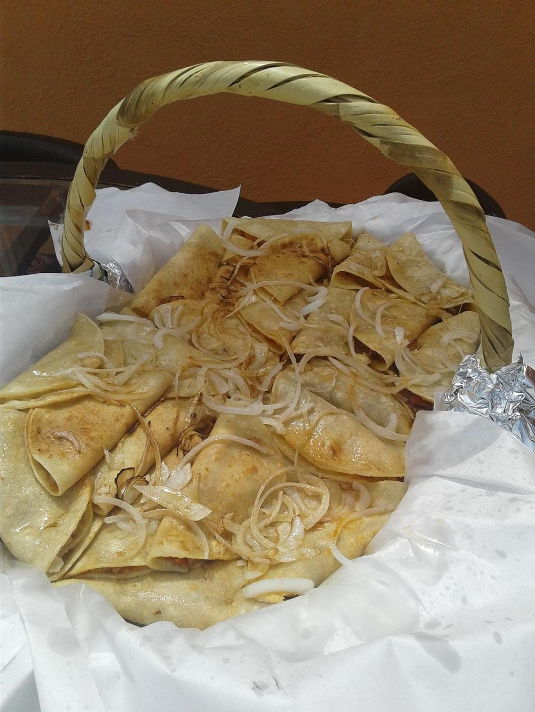
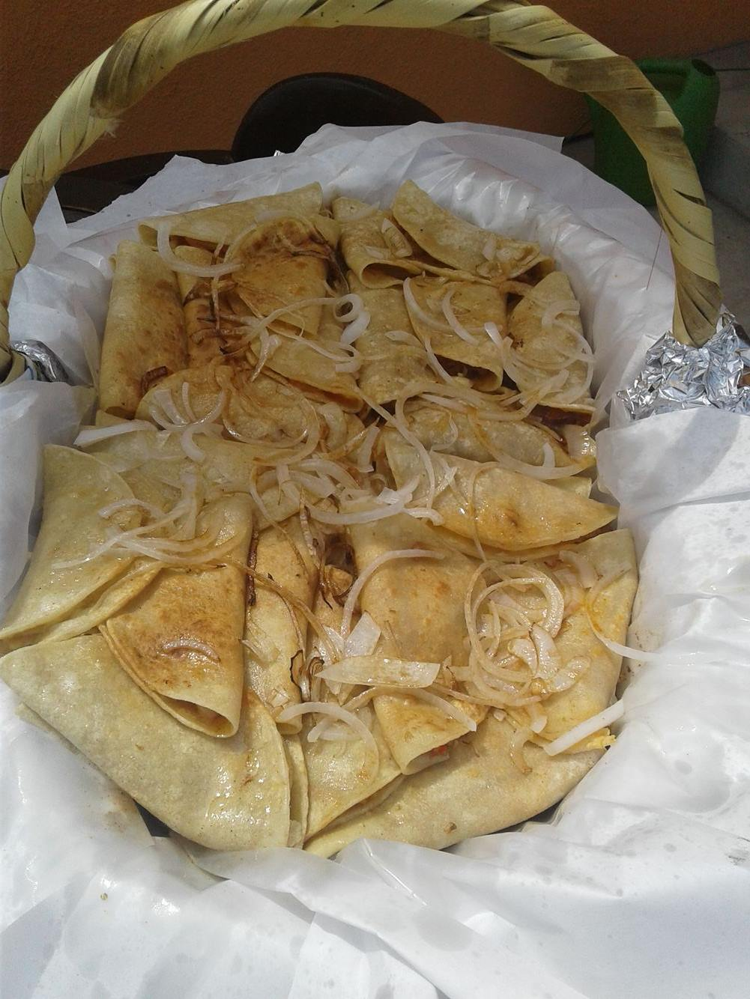
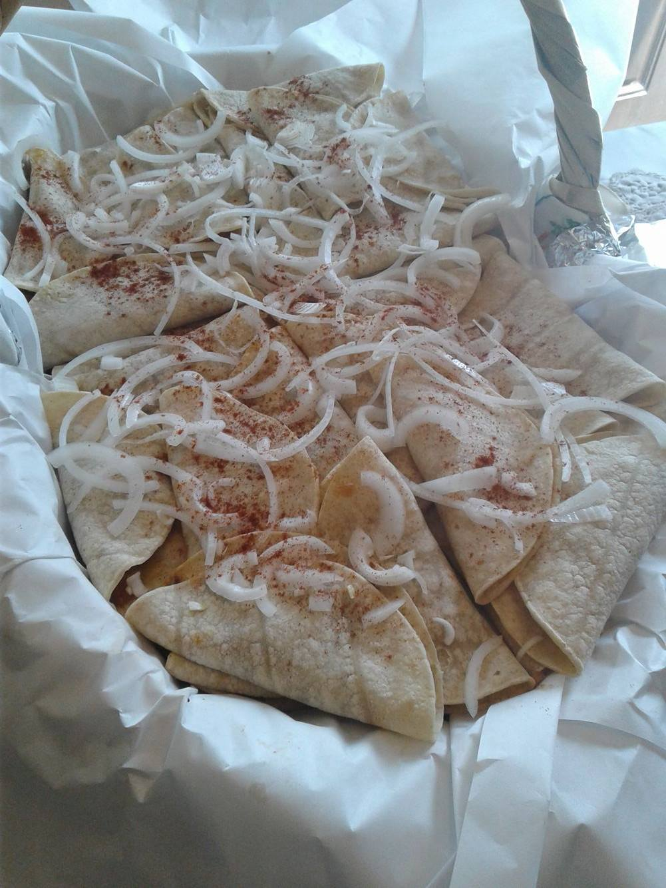
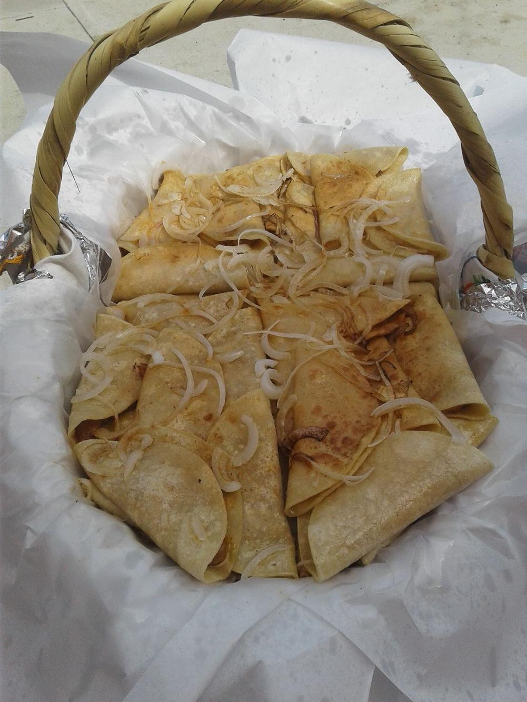

Tacos Don Che
Tacos de canasta
Menu
Tacos are prepared by hand and assembled in a basket.
Hot oil is then put on top of the taco basket which allows buttery finish.




- Beans (vegan)
- -Pinto beans ground in smooth paste
- Nopal (vegan)
- -Cactus, mushroom, corn and onion guisado makes this a hearty vegan taco
- Potato (vegan/vegetarian)
- -potato a la mexicana with spices
- Chicharron
- (pork marinated in spices, chile ancho)
- Picadillo
- (ground turkey marinated in tomato and spices)